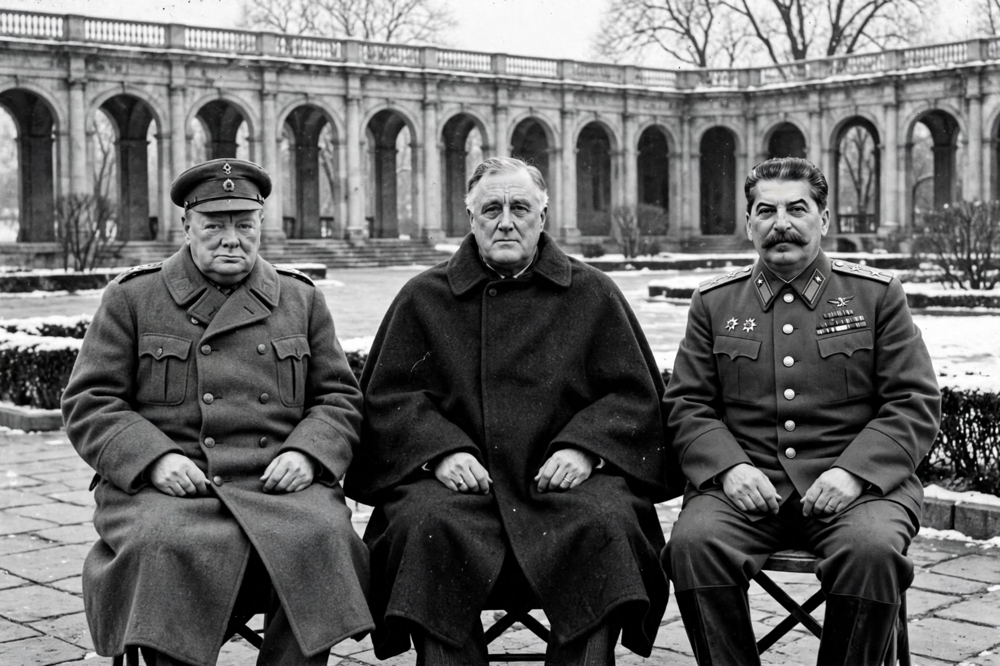

The Yalta Conference, held 4–11 February 1945, was the World War II meeting of the heads of government of the United States, the United Kingdom and the Soviet Union to discuss the postwar reorganisation of Germany and Europe. The three leaders were President Franklin D. Roosevelt, Prime Minister Winston Churchill and General Secretary Joseph Stalin. The conference was held near Yalta in Crimea, Soviet Union, chiefly in the Livadia Palace, a former summer residence of the Russian imperial family.
Yalta was the second of three major wartime conferences between the "Big Three", following the Tehran Conference of 1943 and preceding the Potsdam Conference of July 1945. Its agreements — on the occupation of Germany, the future of Poland, the founding of the United Nations, and Soviet entry into the war against Japan — shaped the settlement of Europe and, in the eyes of later critics, the division of the continent that hardened into the Cold War. The conference's codename was the Argonaut Conference.
| Yalta Conference | |
|---|---|
 | |
| Date | 4–11 February 1945 |
| Location | Livadia Palace and other palaces near Yalta, Crimea, Soviet Union |
| Participants | United States (Franklin D. Roosevelt), United Kingdom (Winston Churchill), Soviet Union (Joseph Stalin) |
| Outcome | Final plans for the defeat and occupation of Germany; arrangements for postwar Europe; agreement on the United Nations Security Council voting formula; Soviet commitment to enter the war against Japan |
By February 1945 the defeat of Germany was a matter of time: the Red Army stood on the Oder, some 70 km from Berlin, while the Western Allies were recovering from the Battle of the Bulge and preparing to cross the Rhine. Roosevelt wanted Soviet help against Japan, agreement on the United Nations, and a democratic settlement for liberated Europe. Stalin wanted security frontiers, reparations, and recognition of the Soviet Union's gains in Eastern Europe. Churchill, anxious about Soviet domination of Central Europe, sought to limit how much of it would be settled by facts already created by the Red Army's advance. The three had last met at Tehran in 1943; the intervening Casablanca meeting of 1943 had brought together only Roosevelt and Churchill. Roosevelt, in visibly failing health, travelled by warship to Malta and then by air to the Crimea.
The leaders reaffirmed unconditional surrender and agreed that Germany would be divided into occupation zones — an American, a British and a Soviet zone, with a French zone to be carved from the American and British zones and France added to the Allied Control Council. Berlin, inside the Soviet zone, would likewise be divided. Germany was to be demilitarised and denazified, its war criminals tried, and reparations paid in kind; a reparations commission in Moscow took as a "basis for discussion" the figure of 20 billion dollars, half of it to the Soviet Union.
Poland was the most contentious issue. Its eastern frontier was fixed essentially along the Curzon Line, with Poland compensated in the west at Germany's expense (the final western border was left to the peace conference). The Soviet-sponsored Provisional Government in Warsaw — the former Lublin Committee — was to be "reorganised on a broader democratic basis" to include democratic leaders from Poland and from the Polish government-in-exile, and the reorganised government pledged "free and unfettered elections as soon as possible". Whether these pledges were honoured became the central grievance of the early Cold War: the reorganised government remained Communist-dominated, and genuinely free elections were never held.
Yalta settled the voting formula that had blocked agreement at Dumbarton Oaks: permanent members of the Security Council would hold a veto over substantive (non-procedural) matters. The Soviet Union also obtained seats in the future General Assembly for two of its republics, Ukraine and Byelorussia, alongside its own. A founding conference was set to open in San Francisco on 25 April 1945.
The three signed a declaration promising the liberated peoples of Europe free elections and governments "broadly representative of all democratic elements" — language whose vagueness, and whose disregard in the Soviet sphere, soon made the declaration a byword for the gap between Yalta's words and its deeds.
In a secret agreement of 11 February, the Soviet Union undertook to enter the war against Japan "two or three months after Germany has surrendered". In return the Allies conceded the restoration of Russia's rights lost in 1905: southern Sakhalin, the lease of Port Arthur as a naval base, the internationalisation of Dairen with Soviet pre-eminent interests, joint operation of the Manchurian railways, and the transfer of the Kuril Islands. The Soviet Union duly declared war on Japan on 8 August 1945.
A separate agreement provided for the return to the Soviet Union of all Soviet citizens liberated by the Western Allies — implemented, in some cases by force, in the repatriations of 1945–47, in which many of those returned faced imprisonment or death.
Yalta quickly became a symbol. To its defenders, it merely recognised the military realities of February 1945: the Red Army already occupied Poland and much of Eastern Europe, and no agreement the Western leaders could sign would have removed it. To critics — especially in the United States, where "Yalta" entered politics as a charge of betrayal, sharpened by the later revelation that the Soviet spy Alger Hiss had been present as an adviser — the conference surrendered Eastern Europe to Stalin in exchange for promises he never intended to keep. The Potsdam Conference of July–August 1945, with new leaders (Truman and Attlee) and the first atomic test behind it, already met in a colder atmosphere, and by 1947 the wartime alliance had given way to open Cold War division.